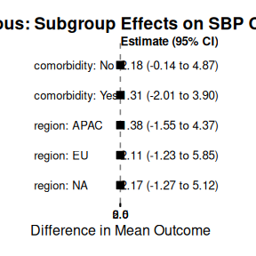

Quickstart
Miriam Pedrera Gomez, Isaac Gravestock, and Marcel Wolbers
Quickstart.Rmd0.1 Introduction
The bonsaiforest2 package consists of 3 core functions which are typically called in sequence:
-
run_brms_analysis()- Prepares the model formula and fits the Bayesian model usingbrms. -
summary_subgroup_effects()- Calculates the marginal overall and subgroup treatment effects. -
plot()- Creates a forest plot from the summary object.
This example makes use of Bayesian modeling, which requires the installation of the
brms package and a working Stan installation (e.g., via
cmdstanr).
install.packages("brms")
install.packages("cmdstanr")
cmdstanr::install_cmdstan()0.2 The Data
We will use a simulated example dataset representing a clinical trial for blood pressure. The relevant endpoint is the change in Systolic Blood Pressure (SBP) from baseline (sbp_change).
We consider an analysis model where we want to find the treatment effect (trt) on sbp_change. The model will adjust for baseline_sbp as a prognostic variable (predictor of the outcome) and explore region and comorbidity as predictive variables (potential treatment effect modifiers).
First, let’s load the libraries and create the data.
# Load the main package
library(bonsaiforest2)
# Load other required packages
library(brms)
library(dplyr)
# Create the example data
set.seed(123)
n_patients <- 200
continuous_data <- data.frame(
id = 1:n_patients,
sbp_change = rnorm(n_patients, mean = -5, sd = 10),
trt = sample(0:1, n_patients, replace = TRUE),
baseline_sbp = rnorm(n_patients, mean = 140, sd = 15),
region = factor(sample(c("NA", "EU", "APAC"), n_patients, replace = TRUE)),
comorbidity = factor(sample(c("Yes", "No"), n_patients, replace = TRUE, prob = c(0.4, 0.6)))
)
# `bonsaiforest2` expects the treatment variable to be a factor
continuous_data$trt <- factor(continuous_data$trt, levels = c(0, 1))
print(head(continuous_data))
#> id sbp_change trt baseline_sbp region comorbidity
#> 1 1 -10.604756 0 129.2714 NA No
#> 2 2 -7.301775 0 128.7097 EU Yes
#> 3 3 10.587083 0 125.9219 APAC Yes
#> 4 4 -4.294916 0 124.2123 EU No
#> 5 5 -3.707123 0 133.4426 APAC Yes
#> 6 6 12.150650 0 144.9677 NA No
0.3 run_brms_analysis()
The run_brms_analysis() function is the first step. It builds the model formula and fits the brms model, applying shrinkage priors to exploratory terms.
Key Arguments:
-
data: Your inputdata.frame. -
response_formula_str: Defines the outcome and main treatment effect (e.g.,"outcome ~ trt"). -
response_type:"continuous","binary","count", or"survival". -
shrunk_predictive_formula_str: Treatment interactions to estimate with shrinkage (e.g.,"~ region:trt + sex:trt"). -
unshrunk_prognostic_formula_str: Main effects (not treatment interactions) to estimate without strong shrinkage (e.g.,"~ age"). -
shrunk_prognostic_formula_str: Main effects to estimate with shrinkage. -
unshrunk_predictive_formula_str: Treatment interactions to estimate without strong shrinkage (e.g.,"~ prespecified_marker:trt"). -
prognostic_effect_priors,predictive_effect_priors: Lists specifying priors for shrunk/unshrunk terms. -
stanvars: Optional object frombrms::stanvar()for custom Stan code (e.g., for hierarchical priors). -
...: Other arguments passed directly tobrms::brm()(likechains,iter,cores).
For this example, we will:
- Define the response as
sbp_change ~ trt. - Adjust for
baseline_sbpas an unshrunk prognostic variable. - Explore
regionandcomorbidityas shrunk predictive variables. We also include~ 1in the shrunk predictive formula to apply shrinkage to the overall treatment effect (intercept of the interactions).
# iter and chains are set low for a quick example.
# For a real analysis, use more iterations (e.g., iter = 2000).
continuous_model_fit <- run_brms_analysis(
data = continuous_data,
response_formula_str = "sbp_change ~ trt",
response_type = "continuous",
unshrunk_prognostic_formula_str = "~ baseline_sbp",
# Shrink intercept (1), region interaction, and comorbidity interaction
shrunk_predictive_formula_str = "~ 1 + region:trt + comorbidity:trt",
chains = 1, iter = 200, warmup = 100, cores = 1,
refresh = 0, backend = "cmdstanr" # Use cmdstanr if available
)
#> Running MCMC with 1 chain...
#>
#> Chain 1 WARNING: There aren't enough warmup iterations to fit the
#> Chain 1 three stages of adaptation as currently configured.
#> Chain 1 Reducing each adaptation stage to 15%/75%/10% of
#> Chain 1 the given number of warmup iterations:
#> Chain 1 init_buffer = 15
#> Chain 1 adapt_window = 75
#> Chain 1 term_buffer = 10
#> Chain 1 finished in 2.3 seconds.
print(continuous_model_fit)
#> Family: gaussian
#> Links: mu = identity
#> Formula: sbp_change ~ unprogeffect + shpredeffect
#> unprogeffect ~ baseline_sbp + trt + region + comorbidity
#> shpredeffect ~ region_APAC_x_trt + region_EU_x_trt + region_NA_x_trt + comorbidity_No_x_trt + comorbidity_Yes_x_trt + 0
#> Data: data (Number of observations: 200)
#> Draws: 1 chains, each with iter = 200; warmup = 100; thin = 1;
#> total post-warmup draws = 100
#>
#> Regression Coefficients:
#> Estimate Est.Error l-95% CI u-95% CI Rhat
#> unprogeffect_Intercept -0.00 3.37 -6.31 6.31 1.18
#> unprogeffect_baseline_sbp -0.04 0.02 -0.08 0.00 1.18
#> unprogeffect_trt 1.44 1.52 -1.68 4.30 1.02
#> unprogeffect_regionEU -0.46 1.88 -4.09 3.78 1.05
#> unprogeffect_regionNA -1.09 1.67 -4.49 2.06 1.02
#> unprogeffect_comorbidityYes 1.12 1.76 -1.97 4.50 1.06
#> shpredeffect_region_APAC_x_trt -0.37 1.30 -3.11 2.51 1.06
#> shpredeffect_region_EU_x_trt 0.57 1.51 -2.08 3.72 1.07
#> shpredeffect_region_NA_x_trt 0.34 1.49 -2.35 3.49 1.03
#> shpredeffect_comorbidity_No_x_trt 0.64 1.49 -2.07 4.47 1.07
#> shpredeffect_comorbidity_Yes_x_trt -0.31 1.30 -3.08 2.05 0.99
#> Bulk_ESS Tail_ESS
#> unprogeffect_Intercept 5 41
#> unprogeffect_baseline_sbp 5 38
#> unprogeffect_trt 84 34
#> unprogeffect_regionEU 30 31
#> unprogeffect_regionNA 50 117
#> unprogeffect_comorbidityYes 79 104
#> shpredeffect_region_APAC_x_trt 130 60
#> shpredeffect_region_EU_x_trt 167 77
#> shpredeffect_region_NA_x_trt 88 115
#> shpredeffect_comorbidity_No_x_trt 49 71
#> shpredeffect_comorbidity_Yes_x_trt 164 117
#>
#> Further Distributional Parameters:
#> Estimate Est.Error l-95% CI u-95% CI Rhat Bulk_ESS Tail_ESS
#> sigma 9.43 0.46 8.71 10.43 1.02 114 52
#>
#> Draws were sampled using sample(hmc). For each parameter, Bulk_ESS
#> and Tail_ESS are effective sample size measures, and Rhat is the potential
#> scale reduction factor on split chains (at convergence, Rhat = 1).
0.4 summary_subgroup_effects()
The next step is to use the fitted model to generate interpretable subgroup effects. This is done with summary_subgroup_effects().
This function uses G-computation to estimate the marginal treatment effect for each subgroup (e.g., “what is the average effect for all patients in the ‘EU’ region?”), averaging over all other covariates like baseline_sbp and comorbidity.
Its main inputs are the brms_fit object from the previous step and the original_data.
continuous_summary <- summary_subgroup_effects(
brms_fit = continuous_model_fit,
original_data = continuous_data, # Pass the original data
trt_var = "trt",
response_type = "continuous" # Must match fitting
# subgroup_vars = "auto" is the default and finds all interactions
)
#> --- Calculating overall marginal effect... ---
#> Step 1: Creating counterfactual datasets...
#> ...setting interaction dummy variables for the 'all treatment' scenario.
#> Step 2: Generating posterior predictions...
#> ... (predicting expected outcomes)...
#> Step 3: Calculating marginal effects...
#> Done.
#>
#> --- Calculating specific subgroup effects... ---
#> `subgroup_vars` set to 'auto'. Detecting from model interaction terms...
#> ...detected subgroup variable(s): region, comorbidity
#> Step 1: Creating counterfactual datasets...
#> ...setting interaction dummy variables for the 'all treatment' scenario.
#> Step 2: Generating posterior predictions...
#> ... (predicting expected outcomes)...
#> Step 3: Calculating marginal effects...
#> ... processing region
#> ... processing comorbidity
#> Done.
print(continuous_summary)
#> $estimates
#> # A tibble: 6 × 4
#> Subgroup Median CI_Lower CI_Upper
#> <chr> <dbl> <dbl> <dbl>
#> 1 Overall 1.89 -0.212 4.15
#> 2 region: APAC 1.38 -1.55 4.37
#> 3 region: EU 2.11 -1.23 5.85
#> 4 region: NA 2.17 -1.27 5.12
#> 5 comorbidity: No 2.18 -0.142 4.87
#> 6 comorbidity: Yes 1.31 -2.01 3.90
#>
#> $response_type
#> [1] "continuous"
#>
#> $ci_level
#> [1] 0.95
#>
#> $trt_var
#> [1] "trt"
#>
#> attr(,"class")
#> [1] "subgroup_summary"
0.5 plot()
Finally, the plot() function takes the subgroup_summary object and creates a forest plot for easy interpretation.
# Generate and display the plot
plot(continuous_summary, title = "Continuous: Subgroup Effects on SBP Change")
#> Preparing data for plotting...
#> Generating plot...
#> Done.
#> `height` was translated to `width`.
This plot displays the marginal treatment effect (mean difference in sbp_change) for the overall population and for each subgroup level. The estimates are “shrunk” towards the overall effect, providing more stable results than fitting separate models for each subgroup.
0.6 Code
We report below all the code for the main workflow presented in this vignette.
library(bonsaiforest2)
library(brms)
library(dplyr)
library(ggplot2)
# --- 2. The Data ---
set.seed(123)
n_patients <- 200
continuous_data <- data.frame(
id = 1:n_patients,
sbp_change = rnorm(n_patients, mean = -5, sd = 10),
trt = sample(0:1, n_patients, replace = TRUE),
baseline_sbp = rnorm(n_patients, mean = 140, sd = 15),
region = factor(sample(c("NA", "EU", "APAC"), n_patients, replace = TRUE)),
comorbidity = factor(sample(c("Yes", "No"), n_patients, replace = TRUE, prob = c(0.4, 0.6)))
)
continuous_data$trt <- factor(continuous_data$trt, levels = c(0, 1))
# --- 3. run_brms_analysis() ---
# (Use iter = 2000, chains = 4 for a real analysis)
continuous_model_fit <- run_brms_analysis(
data = continuous_data,
response_formula_str = "sbp_change ~ trt",
response_type = "continuous",
unshrunk_prognostic_formula_str = "~ baseline_sbp",
shrunk_predictive_formula_str = "~ 1 + region:trt + comorbidity:trt",
chains = 1, iter = 200, warmup = 100, cores = 1,
refresh = 0, backend = "cmdstanr"
)
# --- 4. summary_subgroup_effects() ---
continuous_summary <- summary_subgroup_effects(
brms_fit = continuous_model_fit,
original_data = continuous_data,
trt_var = "trt",
response_type = "continuous"
)
# --- 5. plot() ---
plot(continuous_summary, title = "Continuous: Subgroup Effects on SBP Change")